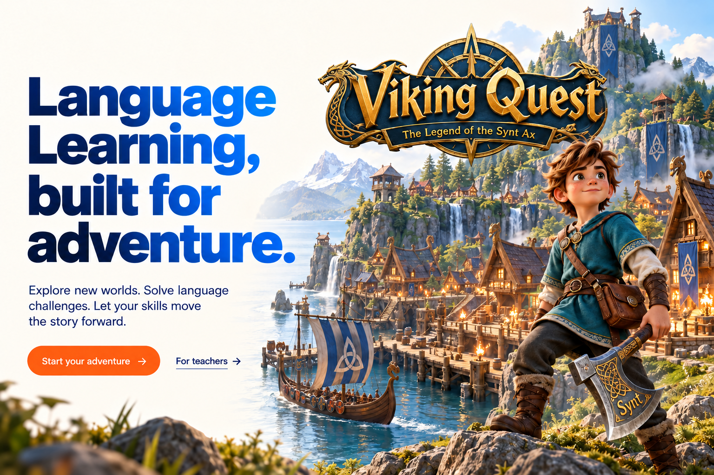
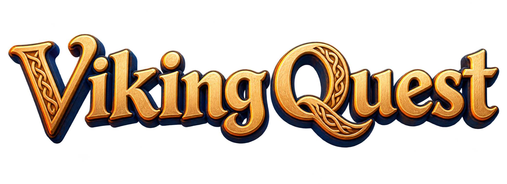
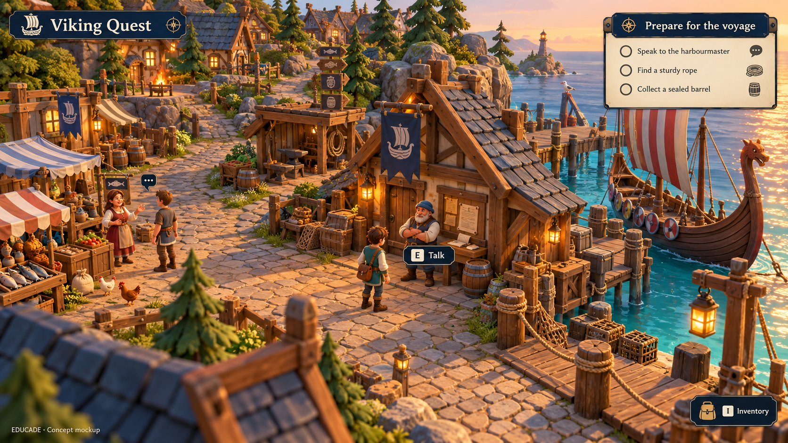
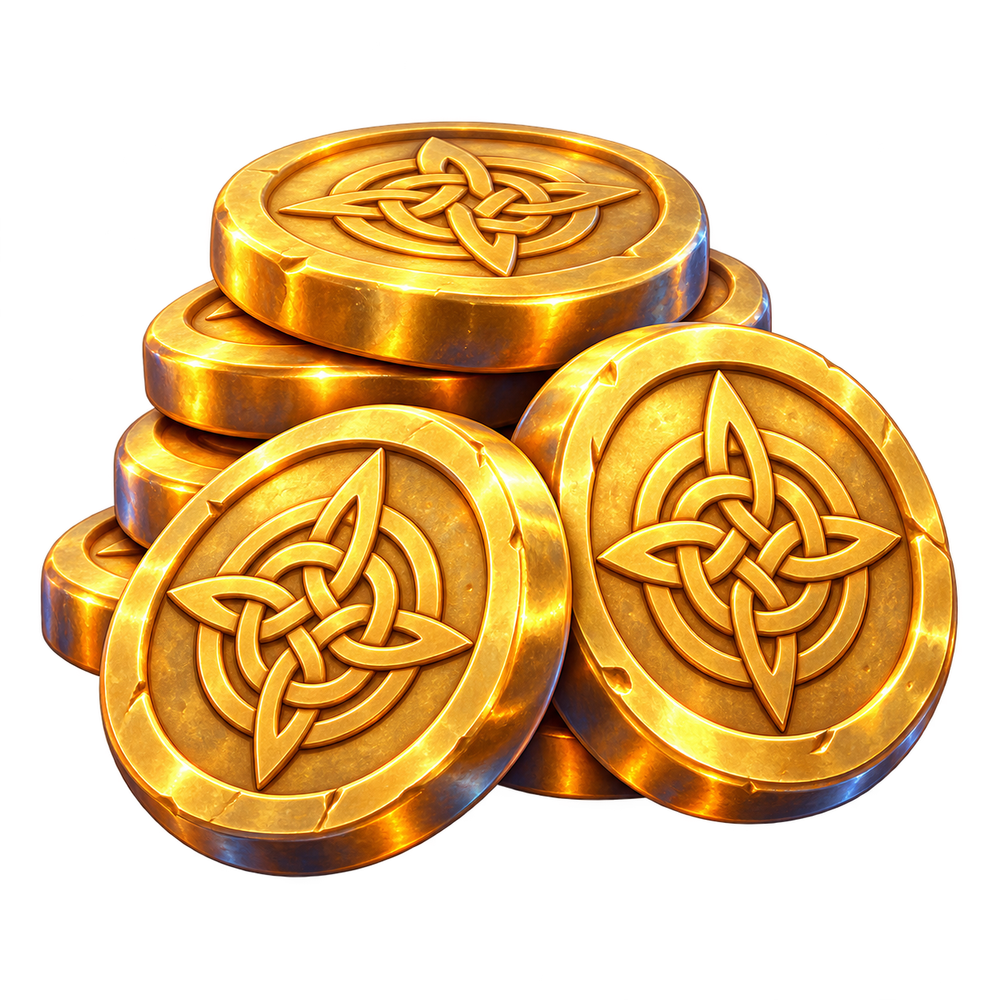
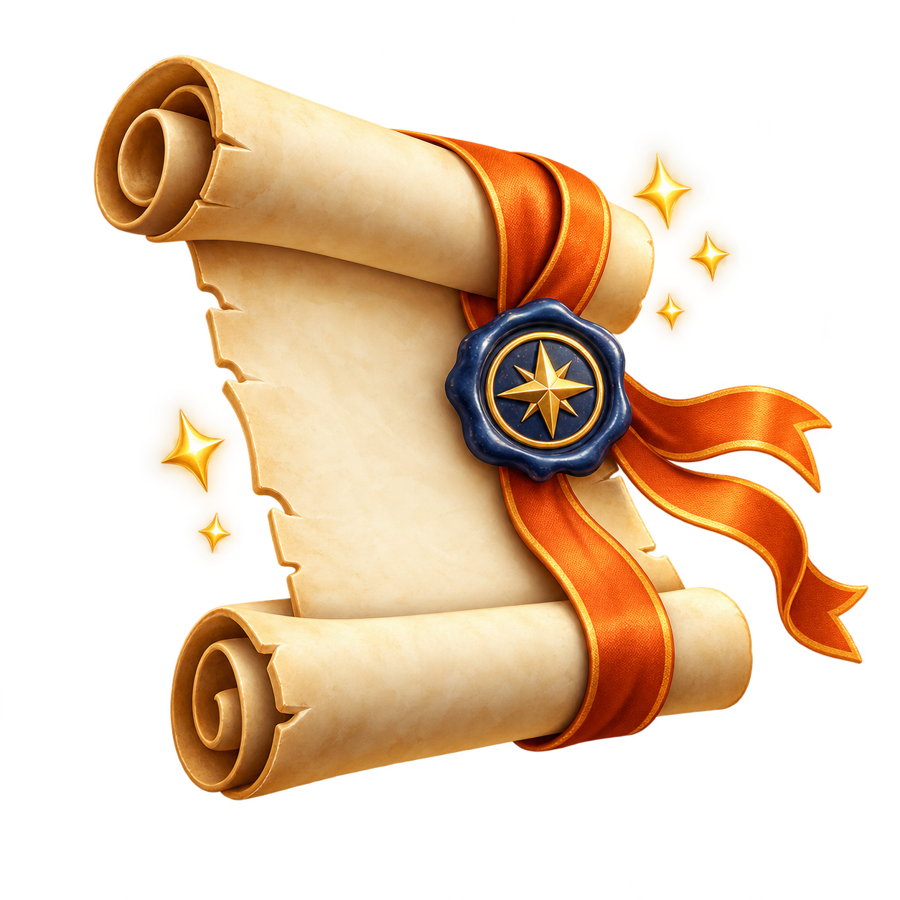
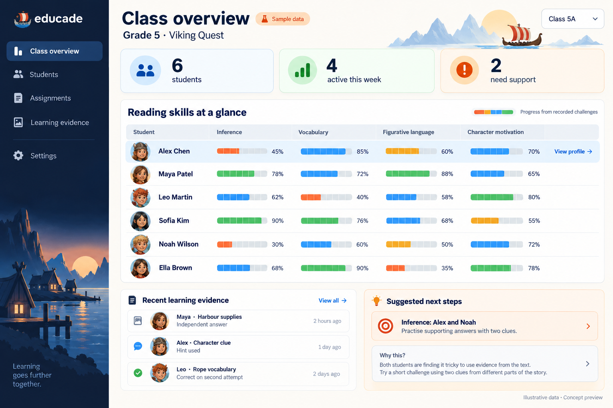
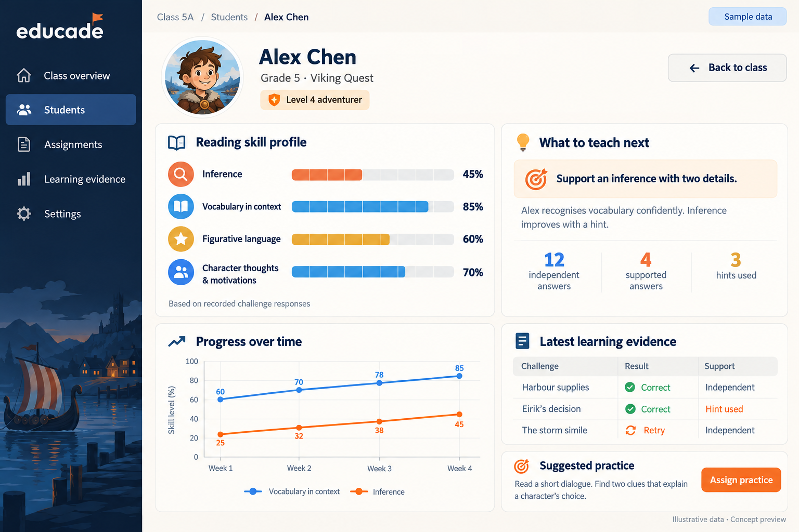

Reading comprehension
Follow instructions, infer a character’s meaning and use evidence to decide what to do next.
Which detail tells you the crew should leave before sunset?
Explore new worlds. Solve language challenges. Let your skills move the story forward.
Try an inventory challenge
What if the practice assigned by a teacher felt like a game students wanted to play? EDUCADE’s goal is a stylised 3D adventure where reading and language decisions move the story forward.

The ship is nearly ready. The harbourmaster needs your help gathering supplies—and the clues are in the village.
Read the mission and work out what the crew needs.
Speak to characters, interpret clues and collect useful items.
Use what you have learned to complete a final challenge.

Each challenge is designed around a language skill, with a reason to use it inside the story.
Follow instructions, infer a character’s meaning and use evidence to decide what to do next.
Meet words through conversations, objects and clues. Encounter them again as the adventure unfolds.
Explore how language choices change meaning, then use precise words to describe places and objects.
Initial curriculum focus: Grade 5 / Year 6 English. Content and skill coverage are being developed.
Read Eirik’s request, then choose something from your inventory. Your decision shows how you have understood the word in context. This interactive example brings one learning moment to life.
“Bring me a sturdy rope,” says the harbourmaster. “The wind is rising, and we must secure the ship.”
Look at the job the rope must do: hold the ship safely in rising wind.
Learning opens the next part of the adventure. Rewards give players something to work towards and a way to make the journey their own.
Planned rewards

Planned XP, gold coins and quest items connect completed challenges to progress in the world.
Planned customisation lets players spend earned rewards on a Viking avatar they can make their own.

Hint scrolls are planned to offer a way forward when a challenge feels difficult, with hint use included in learning records.
See the learning behind each decision. Spot strengths across your class, then explore one learner’s skills, progress and support needs.

Compare reading skills at a glance. See who needs practice and which challenges they completed independently.

Understand a learner’s skill profile, review answer evidence and hint use, and identify a useful next step.
Dashboard concept previews with illustrative sample data.
The learning design starts with what a student needs to practise. Each game interaction is built to make that skill visible.
Planned evidence types. The website example does not transmit learning data.
Viking Quest is the proposed starting point. Future world ideas draw on ancient civilisations, pairing English practice with curriculum-related content knowledge. Future worlds would reuse the learning and evidence systems while giving students new settings to explore.
The first voyageFirst world planned
An imagined first voyage through clues, conversations and English challenges.
Ancient EgyptFuture concept
Imagine discovering stories and solving language clues along the Nile.
Ancient GreeceFuture concept
A potential journey through stories, questions and a world inspired by Ancient Greece.
Ancient RomeFuture concept
Picture roads connecting discoveries, characters and new English challenges.
Ancient ChinaFuture concept
Imagine exploring stories and language in a world inspired by Ancient China.
The first playable quest is not available yet. You can try the vocabulary example on this page; it is an illustration of the learning approach, rather than a playable game level.
The initial content focus is Grade 5 / Year 6 English, with reading and language practice that can also support English learners. Wider age ranges and difficulty levels are longer-term goals.
EDUCADE is being designed as practice that complements teaching. The goal is to help learners apply English skills and give teachers useful evidence for follow-up lessons.
The planned approach connects questions to skill identifiers and records responses, attempts and hints. Reading-level adaptation is a design goal; assessment and reporting will need to be tested with learners.
Device support is still being evaluated. Web and mobile access are goals, with availability to be confirmed as playable builds are tested.
EDUCADE brings together English teaching, curriculum and assessment design with game development. The first goal is one polished 15–30-minute RPG level: a small world, one main quest and several characters, with meaningful learning evidence reaching the teacher dashboard.
Planned student and teacher testing will help shape the game before wider release.
EDUCADE is taking shape. Explore the idea, try a clue
and imagine where English could take you.